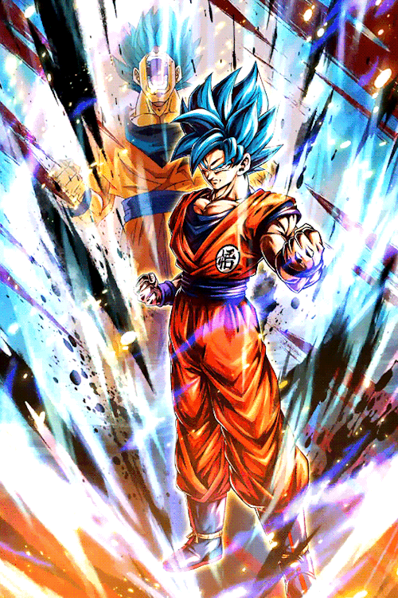
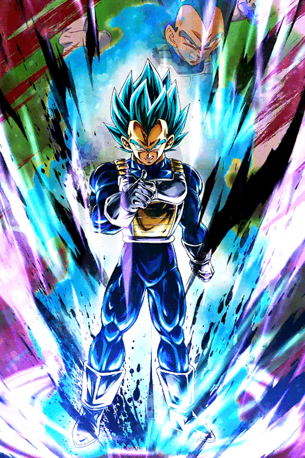
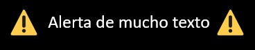

l
Sean todos bienvenidos
l
Dragon Ball (ドラゴンボール lit. Bola de dragón/Esfera del dragón?) es un manga escrito e ilustrado por Akira
Toriyama. Fue publicado originalmente en la revista Shōnen Jump, de la editorial japonesa Shūeisha,
entre 1984 y 1995.12 Su trama describe las aventuras de Gokū, un guerrero saiyajin, cuyo fin es
proteger a la Tierra de otros seres que quieren conquistarla y exterminar a la humanidad. Conforme
transcurre la trama, conoce a otros personajes que le ayudan en este propósito. El nombre de la serie
proviene de unas esferas mágicas que al ser reunidas invocan a un dragón que concede deseos. En varias
ocasiones resultan útiles tanto para Gokū y sus amigos como para la humanidad, aunque también son
procuradas de forma constante por algunos seres malignos.
l
El manga tuvo 519 capítulos impresos recopilados en 42 volúmenes tankōbon.12 Dos años después de su
lanzamiento, Toei Animation estrenó una adaptación anime que abarcó aproximadamente la primera mitad de
la obra. Una vez concluida su transmisión en 1989 por el canal Fuji Television en Japón, Toei estrenó
una continuación titulada Dragon Ball Z, la cual incorporó el contenido restante del manga.1 Un tercer
anime producido por el mismo estudio se estrenó en 1996. Denominado Dragon Ball GT, posee un argumento
inédito en cuya redacción no participó Toriyama.3 En 2015 comenzó a emitirse Dragon Ball Super en Fuji
Television, anime que continúa los sucesos de Dragon Ball Z y que cuenta con una adaptación al manga,
publicada a partir de junio del mismo año en Shōnen Jump.4 La violencia y desnudez presentes en algunos
episodios tanto del anime como del manga provocaron la censura por parte de las distribuidoras en
distintos países.